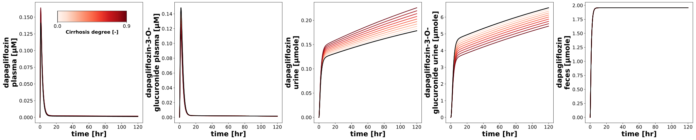
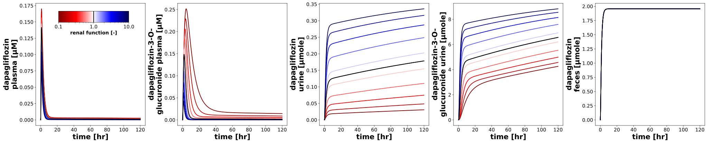
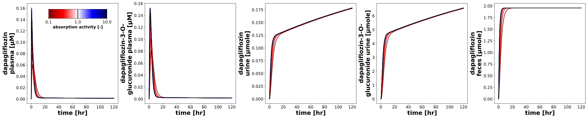

DapagliflozinParameterScan
Models
Datasets
Figures
- timecourse__hepatic_scan: DapagliflozinParameterScan_timecourse__hepatic_scan.svg
- timecourse__renal_scan: DapagliflozinParameterScan_timecourse__renal_scan.svg
- timecourse__food_scan: DapagliflozinParameterScan_timecourse__food_scan.svg
- pk_hepatic_scan: DapagliflozinParameterScan_pk_hepatic_scan.svg
- pk_renal_scan: DapagliflozinParameterScan_pk_renal_scan.svg
- pk_food_scan: DapagliflozinParameterScan_pk_food_scan.svg
{kind=link}
{kind=link}
{kind=link}
timecourse__hepatic_scan
|  |
timecourse__renal_scan
|  |
timecourse__food_scan
|  |
pk_hepatic_scan

|
pk_renal_scan

|
pk_food_scan

|
Code
../../../../experiments/scans/scan_parameters.py
"""Parameter scans dapagliflozin."""
from typing import Dict
import matplotlib.axes
import matplotlib.cm as cm
import numpy as np
from sbmlsim.simulation import Timecourse, TimecourseSim, ScanSim, Dimension
from sbmlsim.plot.serialization_matplotlib import FigureMPL, MatplotlibFigureSerializer
from sbmlsim.plot.serialization_matplotlib import plt
from sbmlutils.console import console
from pkdb_models.models.dapagliflozin.experiments.base_experiment import (
DapagliflozinSimulationExperiment,
)
from pkdb_models.models.dapagliflozin.helpers import run_experiments
class DapagliflozinParameterScan(DapagliflozinSimulationExperiment):
"""Scan the effect of parameters on pharmacokinetics."""
tend = 5 * 24 * 60
steps = 2000
dose_dap = 5 # [mg]
num_points = 10
scan_map = {
"hepatic_scan": {
"parameter": "f_cirrhosis",
"default": 0.0,
"range": np.linspace(0, 0.9, num=num_points),
# "range": np.logspace(-2, 2, num=21),
"scale": "linear",
"colormap": "Reds",
"units": "dimensionless",
"label": "Cirrhosis degree [-]",
},
"renal_scan": {
"parameter": "KI__f_renal_function",
# "range": np.linspace(0.1, 1.9, num=num_points),
"default": 1.0,
"range": np.sort(
np.append(np.logspace(-1, 1, num=num_points), [1.0])
), # [10^-1=0.1, 10^1=10]
"scale": "log",
"colormap": "seismic_r",
"units": "dimensionless",
"label": "renal function [-]",
},
"food_scan": {
"parameter": "GU__f_absorption",
# "range": np.linspace(0.1, 1.9, num=num_points),
"default": 1.0,
"range": np.sort(
np.append(np.logspace(-1, 1, num=num_points), [1.0])
), # [10^-1=0.1, 10^1=10]
"scale": "log",
"colormap": "seismic_r",
"units": "dimensionless",
"label": "absorption activity [-]",
},
}
def simulations(self) -> Dict[str, ScanSim]:
Q_ = self.Q_
tcscans = {}
for scan_key, scan_data in self.scan_map.items():
tcscans[f"scan_po_{scan_key}"] = ScanSim(
simulation=TimecourseSim(
Timecourse(
start=0,
end=self.tend,
steps=self.steps,
changes={
**self.default_changes(),
"PODOSE_dap": Q_(self.dose_dap, "mg"),
},
)
),
dimensions=[
Dimension(
"dim_scan",
changes={
scan_data["parameter"]: Q_(
scan_data["range"], scan_data["units"]
)
},
),
],
)
return tcscans
def figures_mpl(self) -> Dict[str, FigureMPL]:
"""Matplotlib figures."""
# calculate pharmacokinetic parameters
self.pk_dfs = self.calculate_dapagliflozin_pk()
# console.print(self.pk_dfs)
return {
**self.figures_mpl_timecourses(),
**self.figures_mpl_pharmacokinetics(),
}
def figures_mpl_timecourses(self) -> Dict[str, FigureMPL]:
"""Timecourse plots for key variables depending on degree of renal impairment."""
sids = [
"[Cve_dap]",
"[Cve_d3g]",
"Aurine_dap",
"Aurine_d3g",
"Afeces_dap",
]
figures = {}
for scan_key, scan_data in self.scan_map.items():
range = scan_data["range"]
rmin, rmax = range[0], range[-1]
# cmap_str
cmap_str = scan_data["colormap"]
cmap = matplotlib.colormaps.get_cmap(cmap_str)
f, axes = plt.subplots(
nrows=1,
ncols=len(sids),
figsize=(6 * len(sids), 6),
# sharey="row",
# sharex="col",
dpi=150,
layout="constrained"
)
ymax = {}
for kcol, sid in enumerate(sids):
ymax[sid] = 0.0
ax = axes[kcol]
# get data
Q_ = self.Q_
xres = self.results[
f"task_scan_po_{scan_key}"
]
# scanned dimension
scandim = xres._redop_dims()[0]
parameter_id = scan_data["parameter"]
par_vec = Q_(
xres[parameter_id].values[0], xres.uinfo[parameter_id]
)
t_vec = xres.dim_mean("time").to(self.units["time"])
for k_par, par in enumerate(par_vec):
c_vec = Q_(
xres[sid].sel({scandim: k_par}).values,
xres.uinfo[sid],
).to(self.units[sid])
# update ymax
cmax = np.nanmax(c_vec.magnitude)
if cmax > ymax[sid]:
ymax[sid] = cmax
# 0.1 - 1.9
linewidth = 2.0
if np.isclose(scan_data["default"], par):
color = "black"
t_vec_default = t_vec
c_vec_default = c_vec
else:
# red less function, blue more function
if scan_data["scale"] == "linear":
cvalue = (par-rmin)/np.abs(rmax-rmin)
elif scan_data["scale"] == "log":
cvalue = (np.log10(par) - np.log10(rmin)) / np.abs(np.log10(rmax) - np.log10(rmin))
color = cmap(cvalue.magnitude)
ax.plot(
t_vec.magnitude,
c_vec.magnitude,
color=color,
linewidth=linewidth,
)
# plot the reference line in black
ax.plot(
t_vec_default.magnitude,
c_vec_default.magnitude,
color="black",
linewidth=2.0,
)
ax.set_xlabel(
f"{self.label_time} [{self.units['time']}]",
fontdict=self.font,
)
ax.tick_params(axis="x", labelsize=self.tick_font_size)
ax.tick_params(axis="y", labelsize=self.tick_font_size)
ax.set_ylabel(
f"{self.labels[sid]} [{self.units[sid]}]",
fontdict=self.font,
)
# --- colorbar ---
# 4-tuple of floats rect = (left, bottom, width, height).
# A new Axes is added with dimensions rect in normalized (0, 1)
cb_ax = f.add_axes(rect=[0.08, 0.85, 0.1, 0.08])
cb_ax.set_in_layout(True)
# colorbar range
if scan_data["scale"] == "linear":
norm = matplotlib.colors.Normalize(vmin=rmin, vmax=rmax, clip=False)
elif scan_data["scale"] == "log":
norm = matplotlib.colors.LogNorm(vmin=rmin, vmax=rmax, clip=False)
cbar = f.colorbar(
cm.ScalarMappable(norm=norm, cmap=cmap_str),
cax=cb_ax,
orientation="horizontal",
)
# ticks
ticks = [rmin, rmax]
if scan_data["default"] not in ticks:
ticks.append(scan_data["default"])
ticks = sorted(ticks)
cbar.set_ticks(ticks)
console.print(f"{ticks=}")
cbar.set_ticklabels(
ticks, **{"size": 15, "weight": "medium"}
)
cbar.ax.set_xlabel(
scan_data["label"], **{"size": 15, "weight": "bold"}
)
cbar.ax.axvline(x=scan_data["default"], color="black", linewidth=2)
figures[f"timecourse__{scan_key}"] = f
return figures
def figures_mpl_pharmacokinetics(self):
"""Visualize dependency of pharmacokinetics parameters."""
Q_ = self.Q_
figures = {}
parameters_info = {
"dap": [
"aucinf",
"cmax",
"kel",
# "vd",
"thalf",
# "cl",
# "cl_hepatic",
# "cl_renal",
# "cl_fecal",
],
"d3g": [
"aucinf",
"cmax",
"kel",
"thalf",
# "cl_renal",
# "Aurine_eat",
]
}
# names = {
# "dap": self.label_dap,
# "d3g": self.label_d3g.replace("\n", ""),
# }
colors = {
"dap": "black",
"d3g": "tab:blue",
}
for scan_key, scan_data in self.scan_map.items():
parameters = parameters_info["dap"]
f, axes = plt.subplots(
nrows=1, ncols=len(parameters), figsize=(6 * len(parameters), 6), dpi=150,
layout="constrained"
)
# f.suptitle(
# f"{names[substance]}",
# fontsize=self.suptitle_font_size,
# )
axes = axes.flatten()
for substance, parameters in parameters_info.items():
for k, pk_key in enumerate(parameters):
ax = axes[k]
ax.axvline(x=scan_data["default"], color="grey", linestyle="--")
ymax = 0.0
sim_key = f"scan_po_{scan_key}"
xres = self.results[f"task_{sim_key}"]
df = self.pk_dfs[sim_key]
df = df[df.substance == substance] # get PK for substance
# This was scanned
parameter_id = scan_data["parameter"]
x_vec = Q_(
xres[parameter_id].values[0], xres.uinfo[parameter_id]
)
pk_vec = df[f"{pk_key}"]
pk_vec = pk_vec.to_numpy()
x = x_vec
y = Q_(pk_vec, df[f"{pk_key}_unit"].values[0])
y = y.to(self.pk_units[pk_key])
ax.plot(
x,
y,
marker="o",
linestyle="-",
linewidth=2.0,
color=colors[substance],
markeredgecolor=colors[substance],
markeredgewidth=2.0,
markerfacecolor="white",
markersize=9,
label=f"{substance}",
)
ymax_value = np.nanmax(y.magnitude)
if ymax_value > ymax:
ymax = ymax_value
ax.tick_params(
axis="x", labelsize=self.tick_font_size
)
ax.tick_params(
axis="y", labelsize=self.tick_font_size
)
# ax.set_xlabel(scan_data["label"], fontdict=EnalaprilSimulationExperiment.scan_font)
ax.set_xlabel(
scan_data["label"],
fontdict=self.scan_font,
)
ax.set_ylabel(
f"{self.pk_labels[pk_key]} [{self.pk_units[pk_key]}]",
fontdict=self.scan_font,
)
# set axis
# ax.set_ylim(bottom=0.0, top=1.05 * ymax)
# ax.set_ylim(bottom=0.0)
ax.set_xscale("log")
ax.legend(fontsize=DapagliflozinSimulationExperiment.legend_font_size)
figures[f"pk_{scan_key}"] = f
return figures
if __name__ == "__main__":
run_experiments(DapagliflozinParameterScan, output_dir=DapagliflozinParameterScan.__name__)